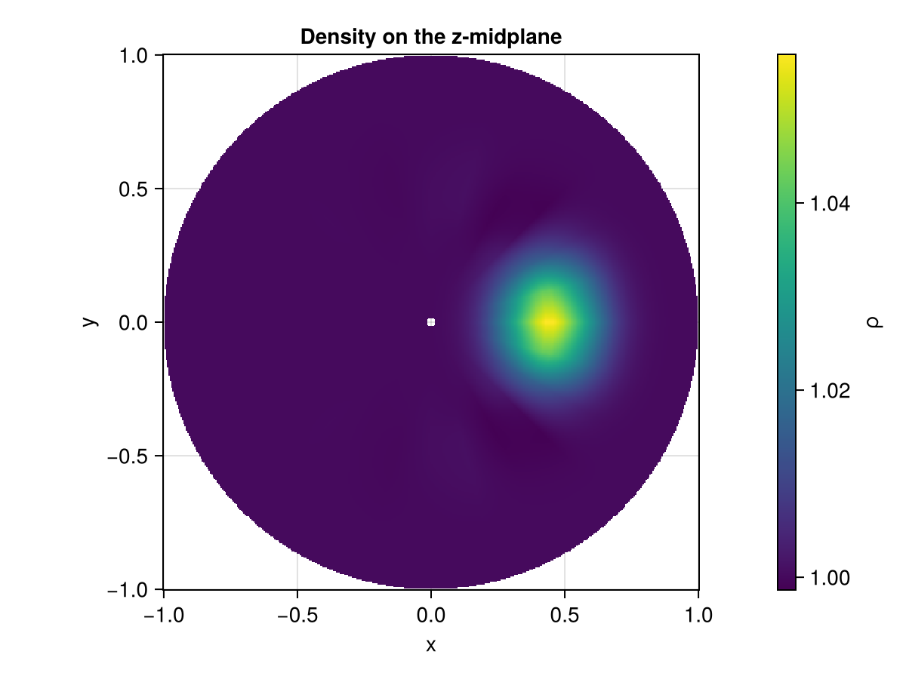
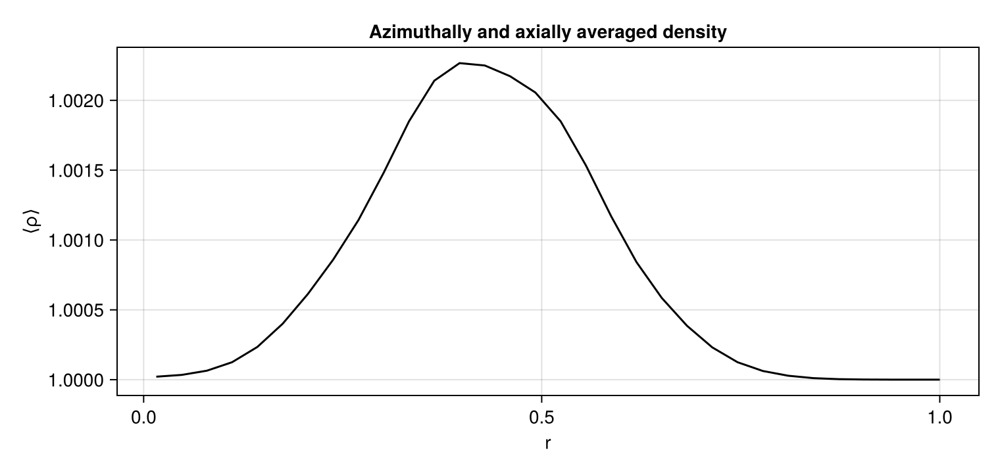

Initialize a resolved cylindrical domain
Setting up a radial acoustic pulse collapsed the angular and axial directions to reach an axisymmetric calculation at one-dimensional cost. This tutorial keeps all three cylindrical directions resolved: $(r,\theta,z)$ with the azimuth periodic over a full turn and the axis regularized by the fold already introduced. It shows how to place an off-axis feature, which additional constraints a resolved angle imposes, and how to view a coordinate slice as a physical disk.
using MPI
MPI.Initialized() || MPI.Init(threadlevel=:funneled)
using CompactLES
using CairoMakie
CairoMakie.activate!(type = "png")Geometry, resolution, and the axis condition
CylindricalMetric reads the three coordinates as $(r,\theta,z)$. AxisBC continues fields through $r=0$ on the half-offset radial grid. Unlike the collapsed case, a point continued through the axis lands on the radial line half a turn away:
\[(-r,\theta,z)\equiv(r,\theta+\pi,z).\]
Two rules follow from this antipodal pairing and the compact schemes, and both are checked at setup:
- a resolved azimuth must span the full $2\pi$ with an even number of points, because the fold pairs each radial line with its antipode half a turn away;
- every resolved dimension needs enough points for the operators — at least five for the sixth-order derivative and nine once the compact filter is on. The axial extent below is sized for the filter, not merely the derivative.
nr, ntheta, nz = 32, 24, 12
Lz = 2.02.0The resolved azimuth also changes the explicit stability limit. Its physical spacing is $r\Delta\theta$, which is smallest at the first half-offset radial node, where it equals $(L_r/2n_r)(2\pi/n_\theta)$. A three-dimensional cylindrical calculation can therefore take much smaller timesteps than the collapsed radial calculation even when both use the same $\Delta r$, and the cost of reaching a given time grows as $n_r^2 n_\theta^2 n_z$: refining the radius shortens the timestep as well as adding points. The grid above is chosen with that product in mind rather than for radial resolution alone.
Place an off-axis feature
The initial condition is a function of the physical coordinates $(r,\theta,z)$. Writing the feature in terms of the Cartesian position $(x, y) = (r\cos\theta, r\sin\theta)$ keeps it smooth and single-valued through the axis, which is what the fold requires: a field defined directly in $\theta$ would be discontinuous where the angle wraps. Here a Gaussian blob sits at $x = 0.45$, off the axis, and is modulated along $z$.
function blob(r, theta, z)
x = r * cos(theta)
y = r * sin(theta)
axial = cos(pi * z / Lz)
exp(-((x - 0.45)^2 + y^2) / 0.02) * axial
end
problem = Problem(
name = "off-axis cylindrical blob",
eos = single_species(gamma = 1.4),
metric = CylindricalMetric(),
domain = ((0.0, 1.0), (0.0, 2pi), (0.0, Lz)),
bcs = ((AxisBC(), SlipWallBC()),
(PeriodicBC(), PeriodicBC()),
(PeriodicBC(), PeriodicBC())),
ic = (r, theta, z) -> begin
b = blob(r, theta, z)
Prim(p = 1.0 + 0.4b, rho = 1.0 + 0.4b)
end,
)
numerics = Numerics(
n_global = (nr, ntheta, nz),
art = ArtParams(enabled = true),
cfl = 0.3,
filter_interval = 1,
)
solver, Q = setup(problem, numerics)(Solver(grid=32 × 24 × 12, t=0.0, step=0, cfl=0.3, metric=CylindricalMetric), ConservedState{Float64}(40 × 32 × 20 × 5))Advance a short interval
A brief integration lets the pressure blob begin to expand and shed a wave toward the axis, so the slice below shows evolved structure rather than the initial Gaussian alone.
run!(solver, Q; tfinal = 0.08, nmax = 500);View a coordinate slice as a disk
field_slice extracts the plane transverse to a chosen direction. A slice at fixed $z$ (normal = 3) is an $(r,\theta)$ disk. Passing it to fieldheatmap resamples that coordinate surface onto a Cartesian raster and draws it with an equal aspect, so the periodic azimuth closes into a full disk and the small hole at the center is the half-cell offset of the first radial node off the axis.
midplane = nz ÷ 2
fig, ax, plt = fieldheatmap(solver, Q, :rho; normal = 3, index = midplane,
axis = (; title = "Density on the z-midplane"),
colormap = :viridis)
fig
The same call with normal = 1 would instead cut a cylinder at fixed radius, giving a $\theta$–$z$ panel. For a one-dimensional radial profile — the azimuthal average as a function of $r$ — use line_profile along dimension 1, which reduces over the resolved angle and axial extent exactly as plane_profile documents.
r, rho_of_r = line_profile(solver, Q, :rho; dim = 1)
linefig = Figure(size = (760, 360))
lineax = Axis(linefig[1, 1], xlabel = "r", ylabel = "⟨ρ⟩",
title = "Azimuthally and axially averaged density")
lines!(lineax, r, rho_of_r, color = :black)
linefig
This page was generated using Literate.jl.